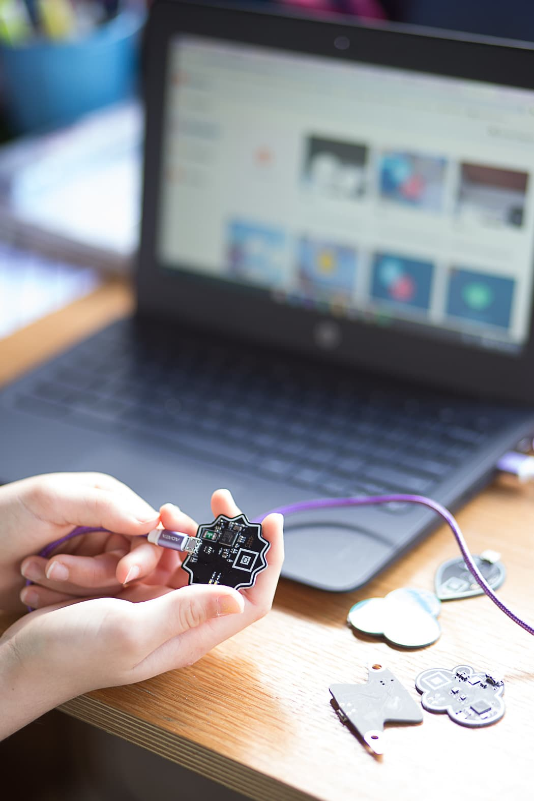

Our Story
Auckland, NZ
Singapore
From New Zealand to Singapore
Kiwrious started as a research project at the University of Auckland, funded by NZ's Curious Minds initiative. After validating with schools across New Zealand and winning the Velocity Innovation award, the technology and IP now lives within the Augmented Human Lab at the National University of Singapore.
Research & prototyping
Founded at Auckland Bioengineering Institute. Curious Minds grant. First sensor prototypes tested in NZ schools.
Kiwrious Ltd incorporated
Registered as a not-for-profit in New Zealand. Deployed across 7+ schools in Auckland. Won Velocity $100K Challenge.
Augmented Human Lab, NUS
IP and technology now based in Singapore. New focus on Southeast Asia. Continued R&D with expanded sensor and software capabilities.